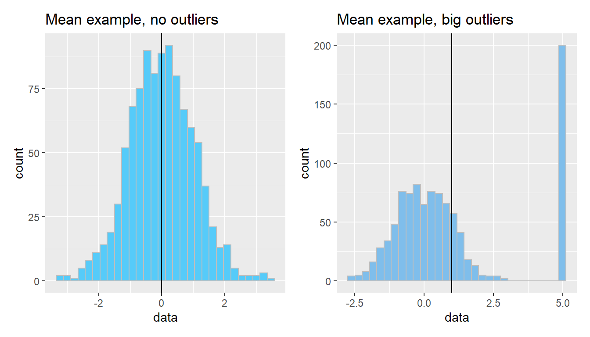

6 Data Science
Data science is an enormous and rapidly growing field that incorporates elements of statistics, computer science, software engineering, high performance and cloud computing, and big data management, as well as syntheses with knowledge from other social and physical science fields to model and predict phenomena captured by data collected from the “real world.” Many books have and will be written on this subject, and this one does not pretend to even attempt to give this area an adequate treatment. Like the rest of this book, the topics covered here are opinionated and presented through the lens of a biological analyst practitioner with enough high level conceptual details and a few general principles to hopefully be useful in that context.
6.1 Data Modeling
The goal of data modeling is to describe a dataset using a relatively small number of mathematical relationships. Said differently, a model uses some parts of a dataset to try to accurately predict other parts of the dataset in a way that is useful to us.
Models are human inventions; they reflect our beliefs about the way the universe works. The successful model identifies patterns within a dataset that are the result of causal relationships in the universe that led to the phenomena that were measured while accounting for noise in the data. However, the model itself does not identify or even accurately reflect those causal effects. The model merely summarizes patterns and we as scientists are left to interpret those patterns and design follow up experiments to investigate the nature of those causal relationships using our prior knowledge of the world.
There are several principles to keep in mind when modeling data:
Data are never wrong. All data are collected using processes and devices designed and implemented by humans, who always have biases and make assumptions. All data measure something about the universe, and so are “true” in some sense of the word. If what we intended to measure and what we actually measured were not the same thing, that is due to our errors in collection or interpretation, not due to the data being wrong. If we approach our dataset with a particular set of hypotheses and the data don’t support those hypotheses, it is our beliefs of the world and our understanding of the dataset that are wrong, not the data itself.
Not all data are useful. Just because data isn’t wrong, it doesn’t mean it is useful. There may have been systematic errors in the collection of the data that makes interpreting them difficult. Data collected for one purpose may not be useful for any other purposes. And sometimes, a dataset collected for a particular purpose may simply not have the information needed to answer our questions; if what we measure has no relationship to what we wish to predict, the data itself is not useful - though the knowledge that what we measured has no detectable effect on the thing we wish to predict may be very useful!
“All models are wrong, but some are useful.” George Box, the renowned British statistician, famously asserted this in a 1976 paper to the Journal of the American Statistical Association. (Box 1976). By this he meant that every model we create is a simplification of the system we are seeking to model, which is by definition not identical to that system. To perfectly model a system, our model would need to be precisely the system we are modeling, which is no longer a model but the system itself. Fortunately, even though we know our models are always wrong to some degree, they may nonetheless be useful because they are not too wrong. Some models may indeed be too wrong, though.
Data do not contain causal information. “Correlation does not mean causation.” Data are measurements of the results of a process in the universe that we wish to understand; the data are possibly reflective of that process, but do not contain any information about the process itself. We cannot infer causal relationships from a dataset alone. We must construct possible causal models using our knowledge of the world first, then apply our data to our model and other alternative models to compare their relative plausibility.
All data have noise. The usefulness of a model to describe a dataset is related to the relative strength of the patterns and noise in the dataset when viewed through the lens of the model; conceptually, the so-called “signal to noise ratio” of the data. The fundamental concern of statistics is quantifying uncertainty (i.e. noise), and separating it from real signal, though different statistical approaches (e.g. frequentist vs Bayesian) reason about uncertainty in different ways.
Modeling begins (or should begin) with posing one or more scientific models of the process or phenomenon we wish to understand. The scientific model is conceptual; it reflects our belief of the universe and proposes a causal explanation for the phenomenon. We then decide how to map that scientific model onto a statistical model, which is a mechanical procedure that quantifies how well our scientific model explains a dataset. The scientific model and statistical model are related but independent choices we make. There may be many valid statistical models that represent a given scientific model. However, sometimes in practice we lack sufficient knowledge about the process to propose scientific models first, requiring data exploration and summarization first to suggest reasonable starting points.
This section pertains primarily to models specified explicitly by humans. There is another class of models, namely those created by certain machine learning algorithms like neural networks and deep learning, that discover models from data. These models are fundamentally different than those designed by human minds, in that they are often accurate and therefore useful, but it can be very difficult if not impossible to understand how they work. While these are important types of models that fall under the umbrella of data science, we limit the content of this chapter to human designed statistical models.
6.1.1 A Worked Modeling Example
As an example, let’s consider a scenario where we wish to assess whether any of three genes can help us distinguish between patients who have Parkinson’s Disease and those who don’t by measuring the relative activity of those genes in blood samples. We have the following made-up dataset:
gene_exp## # A tibble: 200 x 5
## sample_name `Disease Status` `Gene 1` `Gene 2` `Gene 3`
## <chr> <chr> <dbl> <dbl> <dbl>
## 1 P1 Parkinson's 257. 636. 504.
## 2 P2 Parkinson's 241. 556. 484.
## 3 P3 Parkinson's 252. 426. 476.
## 4 P4 Parkinson's 271. 405. 458.
## 5 P5 Parkinson's 248. 482. 520.
## 6 P6 Parkinson's 275. 521. 460.
## 7 P7 Parkinson's 264. 415. 568.
## 8 P8 Parkinson's 276. 450. 495.
## 9 P9 Parkinson's 274. 490. 496.
## 10 P10 Parkinson's 251. 584. 573.
## # ... with 190 more rowsOur imaginary dataset has 100 Parkinson’s and 100 control subjects. For each of
our samples, we have a sample ID, Disease Status of Parkinson's or Control,
and numeric measurements of each of three genes. Below are violin
plots of our (made-up) data set for these three genes:

By inspection, it appears that Gene 1 has no relationship with disease; we may safely eliminate this gene from further consideration. Gene 2 appears to have a different profile depending on disease status, where control individuals have a higher average expression and a lower variance. Unfortunately, despite this qualitative difference, this gene may not be useful for telling whether someone has disease or not - the ranges completely overlap. Gene 3 appears to discriminate between disease and control. There is some overlap in the two expression distributions, but above a certain expression value these data suggest a high degree of predictive accuracy may be obtained with this gene. Measuring this gene may therefore be useful, if the results from this dataset generalize to all people with Parkinson’s Disease.
So far, we have not done any modeling, but instead relied on plotting and our eyes. A more quantitative question might be: how much higher is Gene 3 expression in Parkinson’s Disease than control? Another way of posing this question is: if I know a patient has Parkinson’s Disease, what Gene 3 expression value do I expect them to have? Written this way, we have turned our question into a prediction problem: if we only had information that a patient had Parkinson’s Disease, what is the predicted expression value of their Gene 3?
Another way to pose this prediction question is in the opposite (and arguably more useful) direction: if all we knew about a person was their Gene 3 gene expression, how likely is it that the person has Parkinson’s Disease? If this gene expression is predictive enough of a person’s disease status, it may be a viable biomarker of disease and thus might be useful in a clinical setting, for example when identifying presymptomatic individuals or assessing the efficacy of a pharmacological treatment.
Although it may seems obvious, before beginning to model a dataset, we must start by posing the scientific question as concisely as possible, as we have done above. These questions will help us identify which modeling techniques are appropriate and help us ensure we interpret our results correctly.
6.1.2 Data Summarization
Broadly speaking, data summarization is the process of finding a lower-dimensional representation of a larger dataset. There are many ways to summarize a set of data; each approach will emphasize different aspects of the dataset, and have varying degrees of accuracy. Consider the gene expression of Gene 1 for all individuals in our example above, plotted as a distribution with a histogram:
ggplot(gene_exp, aes(x=`Gene 1`)) +
geom_histogram(bins=30,fill="#a93c13")
6.1.2.1 Point Estimates
The data are concentrated around the value 250, and become less common for larger and smaller values. Since the extents to the left and right of the middle of the distribution appear to be equally distant, perhaps the arithmetic mean is a good way to identify the middle of the distribution:
ggplot(gene_exp, aes(x=`Gene 1`)) +
geom_histogram(bins=30,fill="#a93c13") +
geom_vline(xintercept=mean(gene_exp$`Gene 1`))
By eye, the mean does seem to correspond well to the value that is among the most frequent, and successfully captures an important aspect of the data: its central tendency. Summaries that compute a single number are called point estimates. Point estimates collapse the data into one singular point, one value. The arithmetic mean is just one of these measures of central tendency, computed by taking the sum of all the values and dividing by the number of values. The mean may be a good point estimate of the central tendency of a dataset, but it is sensitive to outlier samples. Consider the following examples:
library(patchwork)
well_behaved_data <- tibble(data = rnorm(1000))
data_w_outliers <- tibble(data = c(rnorm(800), rep(5, 200))) # oops I add some outliers :^)
g_no_outlier <- ggplot(well_behaved_data, aes(x = data)) +
geom_histogram(fill = "#56CBF9", color = "grey", bins = 30) +
geom_vline(xintercept = mean(well_behaved_data$data)) +
ggtitle("Mean example, no outliers")
g_outlier <- ggplot(data_w_outliers, aes(x = data)) +
geom_histogram(fill = "#7FBEEB", color = "grey", bins = 30) +
geom_vline(xintercept = mean(data_w_outliers$data)) +
ggtitle("Mean example, big outliers")
g_no_outlier | g_outlier
The median is another measure of central tendency, which is found by identifying the value that divides the samples into equal halves when sorted from smallest to largest. The median is more robust in the presence of outliers.
g_no_outlier <- ggplot(well_behaved_data, aes(x = data)) +
geom_histogram(fill = "#AFBED1", color = "white", bins = 30) +
geom_vline(xintercept = median(well_behaved_data$data)) +
theme_bw() + ggtitle("Median example") + xlab("") + ylab("")
g_outlier <- ggplot(data_w_outliers, aes(x = data)) +
geom_histogram(fill = "#7FBEEB", color = "grey", bins = 30) +
geom_vline(xintercept = median(data_w_outliers$data)) +
theme_bw() + ggtitle("Median example, big outliers") + xlab("") + ylab("")
g_no_outlier | g_outlier
6.1.2.2 Dispersion
Central tendencies are important aspects of the data but don’t describe what the data do for values outside this point estimate of central tendency; in other words, we have not expressed the spread, or dispersion of the data.
We decide that perhaps computing the standard deviation of the data may characterize the spread well, since it appears to be symmetric around the mean. We can layer this information on the plot as well to inspect it:
g1_mean <- mean(gene_exp$`Gene 1`)
g1_sd <- sd(gene_exp$`Gene 1`)
ggplot(gene_exp, aes(x=`Gene 1`)) +
geom_histogram(bins=30,fill="#a93c13") +
geom_vline(xintercept=g1_mean) +
geom_segment(x=g1_mean-g1_sd, y=10, xend=g1_mean+g1_sd, yend=10)
The width of the horizontal line is proportional to the mean +/- one standard
deviation around the mean, and has been placed arbitrarily on the y axis at y = 10 to show how this range covers the data in the histogram. The +/- 1 standard
deviation around the mean visually describes the spread of the data reasonably
well.
Measures the spread of the data, typically around its perceived center (a mean). Often related to the distribution of the data.
Standard deviation: A measure of how close values are to the mean. Bigger standard deviations mean data is more spread out.
data <- tibble(data = c(rnorm(1000, sd=1.75)))
ggplot(data, aes(x = data)) +
geom_histogram(fill = "#EAC5D8", color = "white", bins = 30) +
geom_vline(xintercept = c(-2, -1, 0, 1, 2) * sd(data$data)) +
theme_bw() + xlab("") + ylab("") + xlim(c(-6, 6)) +
ggtitle("Standard deviations aplenty", paste("SD:", sd(data$data)))
Variance: Similar to SD (it’s the square of SD), variance measures how far a random value is from the mean.
data <- tibble(data = c(rnorm(1000, sd=0.5)))
ggplot(data, aes(x = data)) +
geom_histogram(fill = "#DBD8F0", color = "white", bins = 30) +
geom_vline(xintercept = mean(data$data)) +
theme_bw() + xlab("") + ylab("") + xlim(c(-6, 6)) +
ggtitle("Same mean as SD plot, but different variance",
paste("Variance:", sd(data$data)))
6.1.2.3 Distributions
With these two pieces of knowledge - the mean accurately describes the center of
the data and the standard deviation describes the spread - we now recognize that
these data may be normally distributed, and therefore
we can potentially describe the dataset mathematically. We decide to visually
inspect this possibility by layering a normal distribution on top of our data
using
stat_function:
g1_mean <- mean(gene_exp$`Gene 1`)
g1_sd <- sd(gene_exp$`Gene 1`)
ggplot(gene_exp, aes(x=`Gene 1`)) +
geom_histogram(
aes(y=after_stat(density)),
bins=30,
fill="#a93c13"
) +
stat_function(fun=dnorm, args = list(mean=g1_mean, sd=g1_sd), size=2)Note the histogram bars are scaled to the density of values in each bin to make all the bar heights sum to 1 so that the y scale matches that of a normal distribution.
We have now created our first model: we chose to express the dataset as a normal distribution parameterized by the mean and standard deviation and standard deviation of the data. Using the values of 254 and 11 as our mean and standard deviation, respectively, we can express our model mathematically as follows:
\[ Gene\;1 \sim \mathcal{N}(254, 11) \]
Here the \(\sim\) symbol means “distributed as” and the \(\mathcal{N}(\mu,\sigma)\) represents a normal distribution with mean of \(\mu\) and standard deviation of \(\sigma\). This is mathematical formulation means the same thing as saying we are modeling Gene 1 expression as a normal distribution with mean of 254 and standard deviation of 11. Without any additional information about a new sample, we would expect the expression of that gene to be 254, although it may vary from this value.
The normal distribution is the most common distribution observed in nature, but it is hardly the only one. We could have proposed other distributions to instead summarize our data:
g_norm <- ggplot(tibble(data = rnorm(5000)), aes(x = data)) +
geom_histogram(fill = "#D0FCB3", bins = 50, color = "gray") +
ggtitle("Normal distribution", "rnorm(n = 1000)")
g_unif <- ggplot(tibble(data = runif(5000)), aes(x = data)) +
geom_histogram(fill = "#271F30", bins = 50, color = "white") +
ggtitle("Uniform distribution", "runif(n = 1000)")
g_logistic <- ggplot(tibble(data = rlogis(5000)), aes(x = data)) +
geom_histogram(fill = "#9BC59D", bins = 50, color = "black") +
ggtitle("Logistic distribution", "rlogis(n = 1000)")
g_exp <- ggplot(tibble(data = rexp(5000, rate = 1)), aes(x = data)) +
geom_histogram(fill = "#6C5A49", bins = 50, color = "white") +
ggtitle("Exponential distribution", "rexp(n = 1000, rate = 1)")
(g_norm | g_unif) / (g_logistic | g_exp)In addition to the normal distribution, we have also plotted samples drawn from a continuous uniform distribution between 0 and 1, a logistic distribution which is similar to the normal distribution but has heavier “tails,” and an exponential distribution. There are many more distributions than these, and many of them were discovered to arise in nature and encode different types of processes and relationships.
6.1.2.4 Final Modeling Thoughts
A few notes on our data modeling example before we move on to modeling biological data:
Our model choice was totally subjective. We looked at the data and decided that a normal distribution was a reasonable choice. There were many other choices we could have made, and all of them would be equally valid, though they may not all describe the data well.
We can’t know if this is the “correct” model for the data. By eye, it appears to be a reasonably accurate summary. However, there is no such thing as a correct model; some models are simply better at describing the data than others. Recall that all models are wrong, and some models are useful. Our model may be useful, but it is definitely wrong to some extent.
We don’t know how well our model describes the data yet. So far we’ve only used our eyes to choose our model which might be a good starting point considering our data are so simple, but we have not yet quantified how well our model describes the data, or compared it to alternative models to see which is better. This will be discussed briefly in the next section.
6.1.3 Assessing Model Accuracy
6.1.4 Linear Models .
What is a linear model? Conceptually, how do they work? How do you interpret the results of a linear model? How do you implement a linear model in R?
6.2 Statistical Distributions & Tests .
6.2.1 Statistical Distributions .
What is a distribution? Why are they important? In brief terms, how are distributions defined mathematically? What are some common distributions, and when are they used? What do different distributions look like when plotted? How do we work with distributions in R (e.g. dnorm, pnorm, qnorm, rnorm)?
6.2.2 Statistical Tests .
What is a statistical test, and when is it appropriate to run one? How do we know which tests are appropriate in a given situation? What is the difference between a parametric and non-parametric test? What are some common tests (e.g. t-test, Chi-sq, hypergeometric, etc), and how do we run them in R?
6.2.3 p-values .
What is a p-value? What is the relationship between a p-value and a distribution? What does a p-value look like when plotted with a distribution? How do we interpret p-values? How do we compute a p-value using a distribution and a statistic using R? (Should we mention critical values?)
6.2.4 Multiple Hypothesis Testing .
What is multiply hypothesis testing adjustment? Why is it important? What are some common adjustment methods (Bonferroni (FWER) and Benjamini-Hochberg (FDR))? How do we interpret adjusted p-values (depends on the adjustment method)? How do we compute adjusted p-values in R?
6.2.5 Statistical power .
Conceptually, what is statistical power, and what does it mean? Why is it important? What is the relationship between a dataset, an analysis, and power? What aspects of an analysis influence the statistical power of a test? (I don’t think it’s reasonable to ask students to perform power calculations, just to be aware that power is a thing and generally what it is).
6.3 Clustering .
What is clustering? What is the goal of clustering? How does clustering relate to data modeling (e.g. clustering is usually hypothesis-free)? How is clustering useful (i.e. what can we do with different clusters)? What are some common clustering methods, and how do we implement and visualize the results in R?
6.4 Network Analysis .
What is a network? What is network analysis? What are some example network analysis applications in biology and bioinformatics (there is a full ksection on [Biological Networks] in the bio chapter, these are just illustrative examples)? How do we represent networks in R, and how do we analyze them? ([Network visualization] is covered in the data viz chapter, might be helpful to write these two sections together)